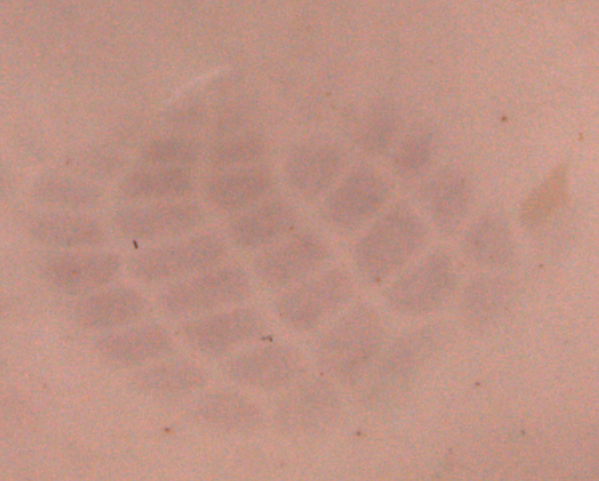
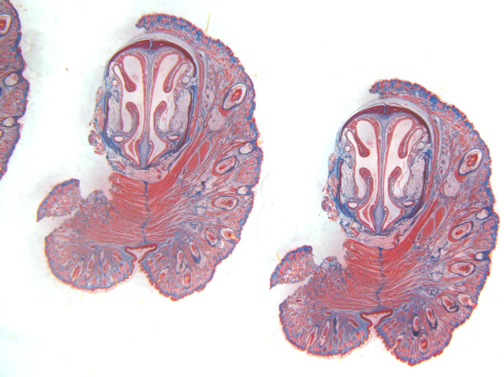
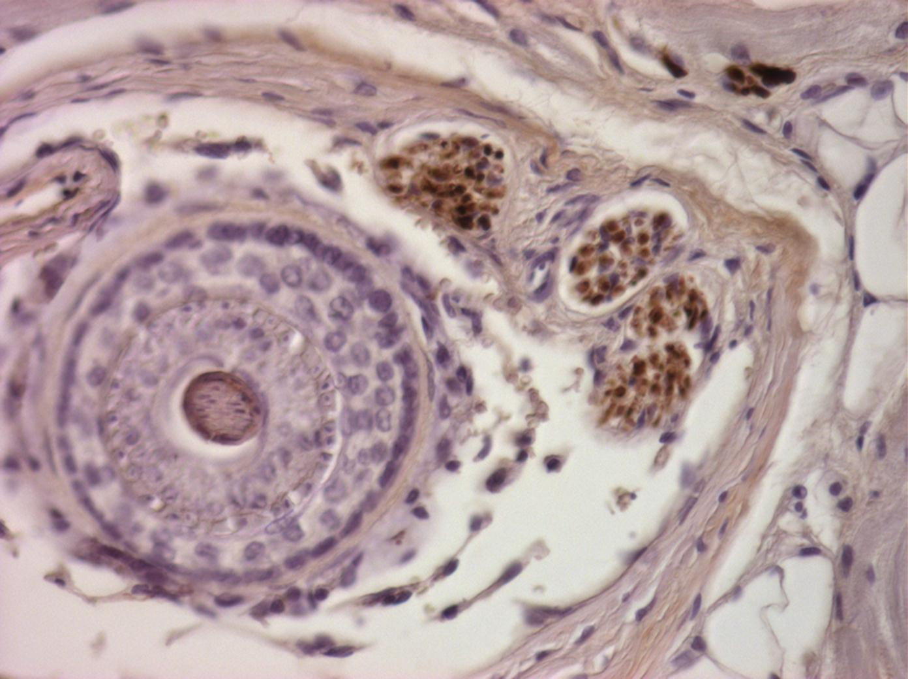

Our research framework
Functional reinnervation as the standard for recovery
Organs and tissue depend on the nervous system to function. After injury, disease, or transplant, nerves must regrow into the organ or tissue, reconnect with the brain, and restore the behaviors that depend on them. This is functional reinnervation, and it fails in most animals, including humans. We study highly regenerative animals that achieve it to understand why they succeed and what that means for human patients.
The diagram maps our primary research interests. Structural and behavioral recovery sit at the center because they are the outcomes we can measure, and because measuring them well is what makes the other questions tractable.


Know the Animal
Functional reinnervation can only be measured against a known baseline. Before we study injury, we characterize the natural physiology, sensory biology, and behavior of the species we work with. An animal that uses its whiskers to navigate, eat, and socialize has a different sensory baseline than one that does not. Recovery means returning to that baseline. You cannot measure restoration without first knowing what you are restoring.
Memory of Spiny Mice
Spiny mice show enhanced learning and memory relative to standard laboratory mice. We are characterizing this cognitive baseline in uninjured animals to establish what normal looks like before studying how injury and reinnervation affect it. If the brain reintegrates new sensory signals after peripheral nerve regeneration, memory and learning are where that reintegration becomes measurable. This work is supported by an internal PrePI grant from Kennesaw State University, with Dr. Vishnu Suppiramaniam and Dr. Erica Holliday.
Olfactory and Tactile Sensation in Salamanders
Before we can ask whether a salamander recovers its sensory abilities after injury, we need to know what those abilities are. We are characterizing olfactory and tactile sensation across salamander species as a baseline for future studies of functional reinnervation. Species that differ in how they use their bodies during recovery may differ in reinnervation outcomes, and those differences start with the animal's normal sensory world. This work is supported by an internal Mentor Protege grant from Kennesaw State University, with Dr. Todd Pierson.
Key Publications
- Varholick (2025). "Bite wounds and dominance structures in male and female African spiny mice..." Animals. Link

Regeneration, Adaptation, or Both?
After injury, regeneration and adaptation occur simultaneously. Tissue regrows while the nervous system rewires, sensation redistributes, and behavior changes to compensate. Both processes can restore function. The problem is that they are not distinguishable by outcome alone. An animal that scores well on a behavioral assay may have fully reinnervated its target organs, or it may have learned to compensate without them. These are not the same biological achievement, and they do not have the same implications for human therapy.
Functional reinnervation is the specific standard we apply. We ask whether nerves regrew into the right targets, whether those targets reconnected with the brain, and whether the behavior that depends on that circuit actually returned. When all three align, we can call it restoration. When they dissociate, we learn something about what compensation looks like and why it falls short.
Quality of Regeneration
Regenerated tissue is not always equivalent to the original. We quantify structural recovery at the level of individual nerves, end-organs, and skin architecture to determine how completely the original tissue is restored. Variability in structural recovery is not noise, it is the signal. Understanding what drives that variability is what makes the difference between an animal that restores function and one that compensates for its loss.
Does Structure Predict Function?
When sensation or movement returns after injury, the standard interpretation is that regeneration worked. We ask whether that interpretation is justified. Using behavioral assays alongside histological and electrophysiological measures, we test whether the degree of structural reinnervation predicts the degree of functional recovery or whether the two dissociate. Dissociation tells us compensation is doing the work. Alignment tells us reinnervation succeeded.

Closing the Gap in Human Organ Repair
Every transplanted organ or tissue arrives denervated. The surgery reconnects blood supply, but the nervous system does not follow. A transplanted heart beats without autonomic regulation. A transplanted kidney filters without the sensory feedback that normally calibrates it. Even in injuries short of transplant, when nerves are severed and regrow, they rarely find their original targets with enough precision to restore full function. Patients live with permanent numbness, dysregulation, and incomplete recovery not because the organ failed but because the nervous system never fully reconnected.
This is the gap we are working to close. By studying species that achieve functional reinnervation — where nerves regrow into the right targets, the brain reintegrates the new signals, and behavior returns — we aim to identify what drives successful reconnection and what blocks it in humans.
Optimizing Peripheral Nerve Healing
The spiny mouse whisker pad is a model system for studying how functional reinnervation happens at the organ level. Each whisker follicle is a discrete sensory end-organ with defined innervation targets, making it possible to ask precisely whether regenerating nerves find the right targets and restore the right signals. We use this system to identify the molecular, cellular, and behavioral conditions that support high-quality reinnervation and to ask what common mammals lack.
The Missing Ingredient: Behavioral-Sensory Feedback
Reinnervation does not happen without the brain and behavior. We hypothesize that active sensory feedback and behavioral engagement during recovery are not passive consequences of reinnervation but necessary drivers of it. Salamanders that use their limbs during recovery reinnervate differently than those that do not. Spiny mice that actively explore reinnervate differently than those that are sedentary. Identifying the critical windows when behavioral input most influences nerve guidance and target reinnervation is how we design rehabilitation strategies that work alongside molecular and surgical therapies, not after them.
Key Publications
- Varholick et al. (2025). "Spiny mice regenerate wounded whisker pad skin with whisker follicles..." npj Regenerative Medicine. Link